3D Scene Understanding
Open-vocabulary 3D representations, multi-view reasoning, and scene-level grounding.
I am a research scientist at NVIDIA Research Taiwan. I have worked on computer vision for 3D scenes.
My research extends 3D scene understanding beyond reconstruction and rendering toward embodied reasoning, exploration, and vision-language action.
Open-vocabulary 3D representations, multi-view reasoning, and scene-level grounding.
Voxel, Gaussian, and neural scene representations for efficient high-fidelity rendering.
Vision-language navigation and embodied reasoning that connect perception to decisions.
Representative publications are shown first, followed by earlier work in 3D vision.
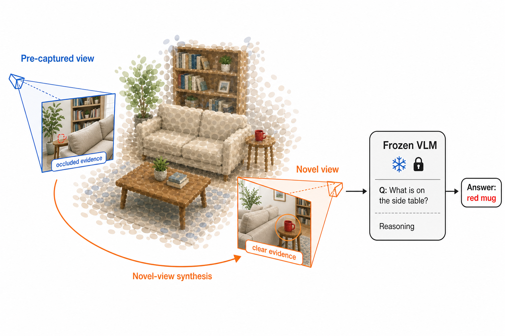
Novel-view synthesis improves the reasoning capabilities of embodied agents.
Academic collaboration with KAIST and POSTECH.
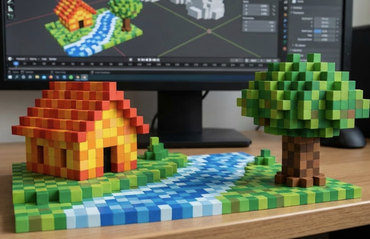
Any VLMs or LLMs can now reason over 3D scenes.
NVIDIA research paper.
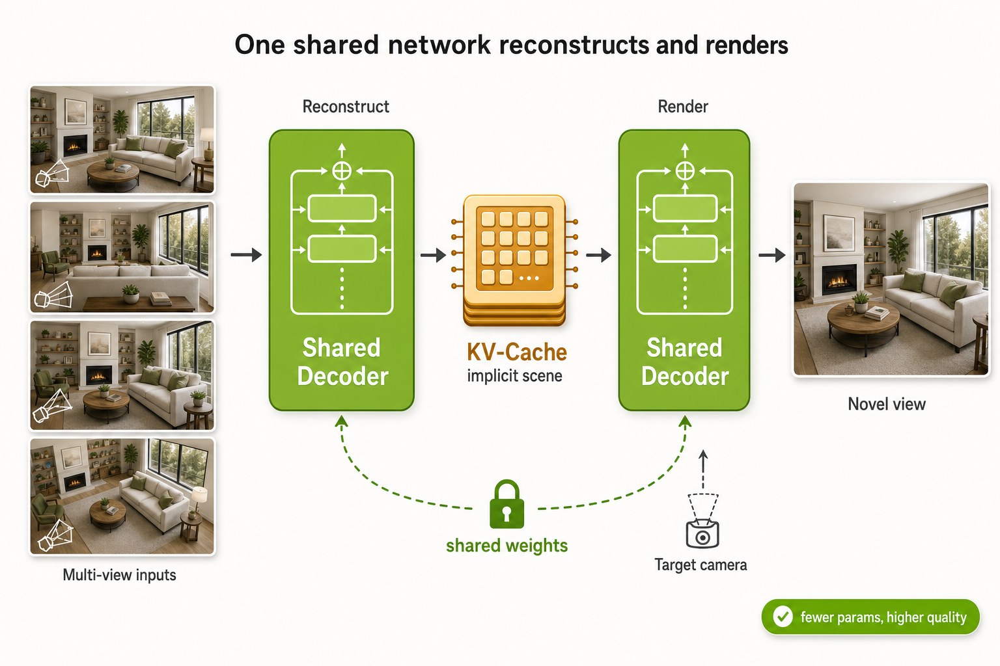
A decoder-only view synthesis model that represents scenes as a KV-cache and shares weights between reconstruction and rendering.
NVIDIA research paper.
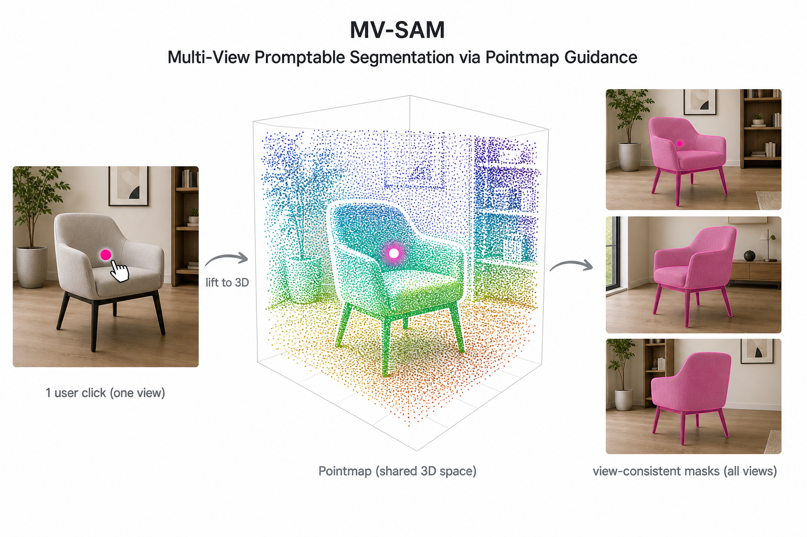
Multi-view promptable segmentation that achieves 3D consistency using pointmaps.
NVIDIA research paper.
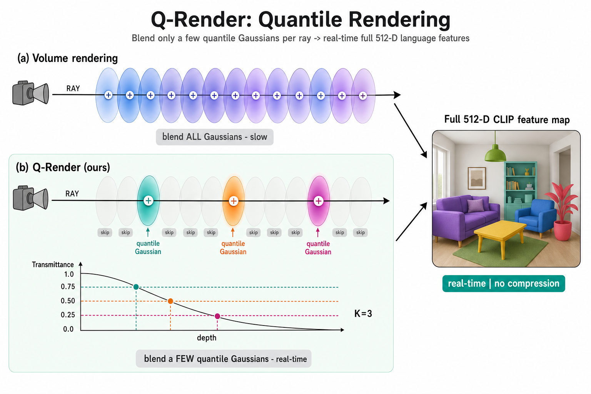
Efficient feature rendering for 3D Gaussians, with large speed gains when rendering high-dimensional feature maps.
NVIDIA research paper.
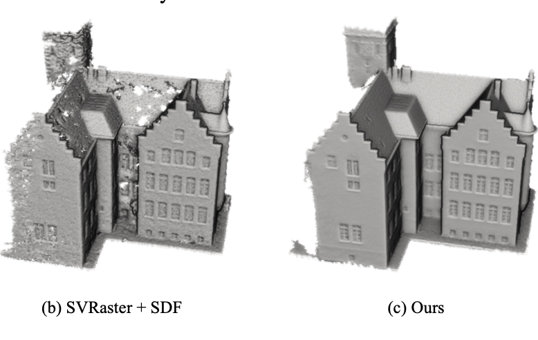
Voxel-wise associations among parent-child and sibling voxel groups produce smoother surface reconstruction.
Academic collaboration with Seoul National University.
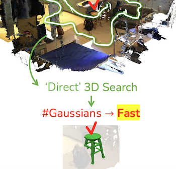
Language knowledge is distilled into 3D Gaussian Splatting for direct referring.
Winner of Qualcomm Innovation Fellowship Korea. Academic collaboration with POSTECH.
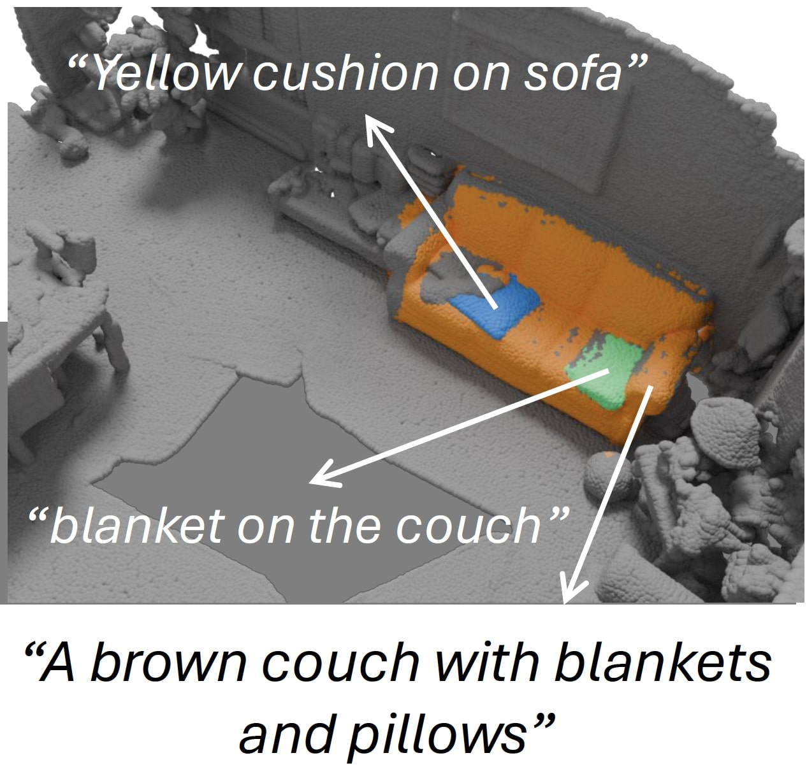
A data generation pipeline uses 2D foundation models to synthesize 3D mask-text paired data.
NVIDIA research paper.
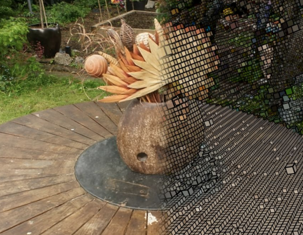
Rasterization is extended into sparse voxel representations for real-time image rendering.
NVIDIA research paper.
Spacetime surface regularization for 4D surface reconstruction and dynamic scene rendering.
NVIDIA research paper.
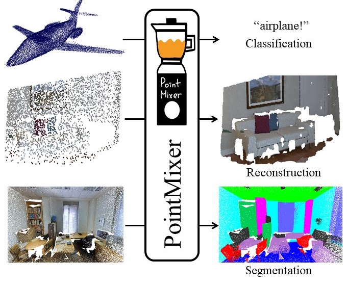
A new MLP-only architecture for 3D point cloud understanding.
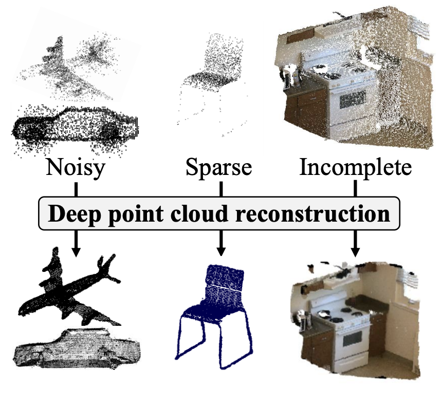
Point cloud upsampling and denoising are performed jointly with strong generalization.
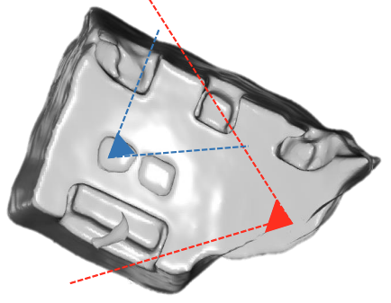
A deep learning based depth fusion algorithm for indoor scene reconstruction.
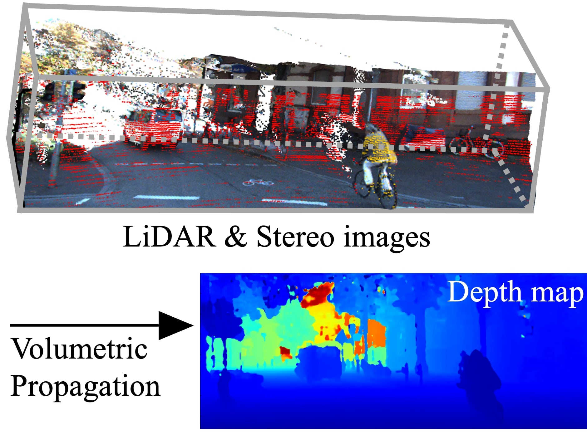
Dense depth estimation by fusing LiDAR points and stereo images.
Stereo matching is guided by object-level 3D context inside the cost volume.
Monocular 3D vehicle localization is decomposed into road-plane segment prediction and 3D regression.
I have mentored the following research interns.
For research collaboration, I have collaborated with the following researchers.